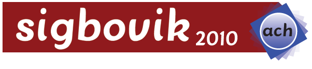

SIGBOVIK 2010: The Fourth Annual Intercalary Workshop about Symposium on Robot Dance Party of Conference in Celebration of Harry Q. Bovik's 2^6th Birthday

WelcomeACH SIGBOVIK is the Assocation for Computational Heresy Special Interest Group on Harry Q. Bovik. The dates for the 2010 workshop will be announced shortly. Call For PapersSIGBOVIK celebrates the inestimable research work of Harry Q. Bovik. Since his research has been so variegated, the conference is traditionally a forum for discussion on many subjects: Inept Expert Systems, Deep Space Navigation, Science, Perplexity Theory, Thaughmaturgic Circle, Self-Adjusting Computation, Denotational Semantics of Pidgin and Creole, Advanced Technology in a Magical and Revolutionary Device at an Unbelievable Price, Haptic Rendering, State Dominance, Phylogenetics, Massively Multiplayer Online Games, Natural Intelligence, Artificial Stupidity, Elbow Macaroni, Rasterized Love Triangles, Synergistic Hyperparadigmatism, Computational Archaeolinguistics, Hyper Driven Devices, and any other topic approved by the conference organizers. The Program Committee seeks submissions on the entire range of topics. Authors of accepted manuscripts will be allowed (but not required to use) twenty minutes to present their work. Any unusual requirements, such as additional time/antitime or special equipment, can and should be arranged through the organizers at info AT sigbovik DOT org. We will also accept prerecorded talks. Important Dates
Submission DetailsSubmissions are now being accepted via the EasyChair submission system. Please provide legitimate contact information to EasyChair; the name(s) listed on the paper itself, not the contact information provided to EasyChair, will be used for the purposes of the conference. All papers must describe original, previously unpublishable research. There is not a strict page limit, but papers should generally not exceed 15 pages. Submissions should be in the 8.5x11 sheet of paper style; ISO 216 is for hippies and communists. |